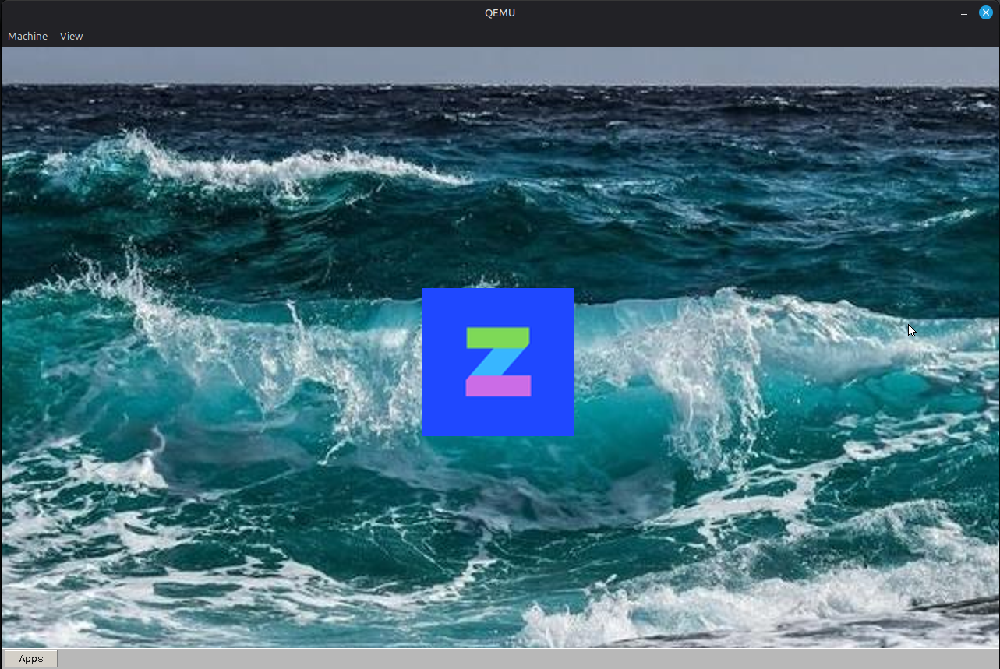

ZylonkOS · Programa de testes
Antes de baixar, leia e confirme.
O ZylonkOS é um sistema operacional em desenvolvimento. Leia cada declaração e marque todas as caixas obrigatórias para habilitar o botão de download.
Prévia:

Confirmações obrigatórias
Todas as opções precisam ser marcadas. Leia as instruções oficiais do projeto antes de instalar ou executar a imagem.